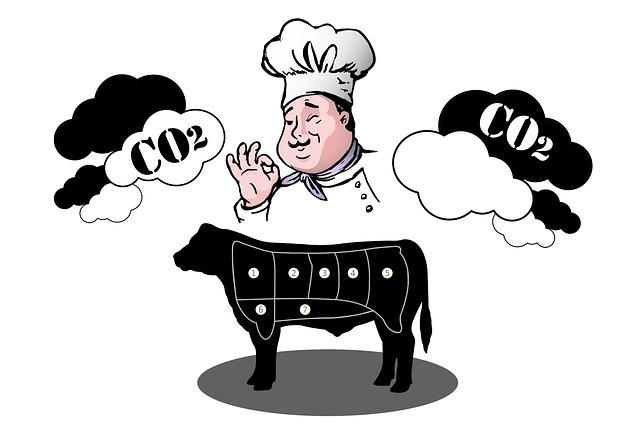

Home

Greenhouse Gas Cow by geralt - pixabay
British Petroleum, the second largest non-state owned oil company in the world, with 18,700 gas and service stations worldwide, hired the public relations professionals Ogilvy & Mather to promote the slant that climate change is not the fault of an oil giant, but that of individuals. It’s here that British Petroleum, or BP, first promoted and soon successfully popularized the term “carbon footprint” in the early aughts. The company unveiled its “carbon footprint calculator” in 2004 so one could assess how their normal daily life – going to work, buying food, and (gasp) traveling – is largely responsible for heating the globe.
The carbon footprint sham by Mark Kaufman